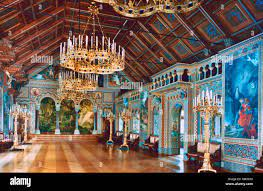

SCENE.—Market-place of Speisesaal, in the Grand Duchy of Pfennig Halbpfennig. A well, with decorated ironwork, up L.C. GRETCHEN, BERTHA, OLGA, MARTHA, and other members of ERNEST DUMMKOPF'S theatrical company are discovered, seated at several small tables, enjoying a repast in honour of the nuptials of LUDWIG, his leading comedian, and LISA, his soubrette.
CHORUS.
Won't it be a pretty wedding? Will not Lisa look delightful? Smiles and tears in plenty shedding— Which in brides of course is rightful One could say, if one were spiteful, Contradiction little dreading, Her bouquet is simply frightful— Still, 'twill be a pretty wedding! Oh, it is a pretty wedding! Such a pretty, pretty wedding!
ELSA.
If her dress is badly fitting, Theirs the fault who made her trousseau.
BERTHA.
If her gloves are always splitting, Cheap kid gloves, we know, will do so.
OLGA.
If upon her train she stumbled, On one's train one's always treading.
GRET.
If her hair is rather tumbled, Still, 'twill be a pretty wedding!
CHORUS.
Such a pretty, pretty wedding!
CHORUS.
Here they come, the couple plighted— On life's journey gaily start them. Soon to be for aye united, Till divorce or death shall part them.
(LUDWIG and LISA come forward.)
DUET—LUDWIG and LISA.
LUD.
Pretty Lisa, fair and tasty, Tell me now, and tell me truly, Haven't you been rather hasty? Haven't you been rash unduly? Am I quite the dashing sposo That your fancy could depict you? Perhaps you think I'm only so-so?
(She expresses admiration.)
Well, I will not contradict you!
CHORUS.
No, he will not contradict you!
LISA.
Who am I to raise objection? I'm a child, untaught and homely— When you tell me you're perfection, Tender, truthful, true, and comely— That in quarrel no one's bolder, Though dissensions always grieve you— Why, my love, you're so much older That, of course, I must believe you!
CHORUS.
Yes, of course, she must believe you!
CHORUS.
If he ever acts unkindly, Shut your eyes and love him blindly— Should he call you names uncomely, Shut your mouth and love him dumbly— Should he rate you, rightly—leftly— Shut your ears and love him deafly. Ha! ha! ha! ha! ha! ha! ha! Thus and thus and thus alone Ludwig's wife may hold her own!
(LUDWIG and LISA sit at table.)
Enter NOTARY TANNHAUSER.
NOT.
Hallo! Surely I'm not late?
(All chatter unintelligibly in reply.)
NOT.
But, dear me, you're all at breakfast! Has the wedding taken place?
(All chatter unintelligibly in reply.)
NOT.
My good girls, one at a time, I beg. Let me understand the situation. As solicitor to the conspiracy to dethrone the Grand Duke—a conspiracy in which the members of this company are deeply involved—I am invited to the marriage of two of its members. I present myself in due course, and I find, not only that the ceremony has taken place—which is not of the least consequence —but the wedding breakfast is half eaten—which is a consideration of the most serious importance.
(LUDWIG and LISA come down.)
LUD.
But the ceremony has not taken place. We can't get a parson!
NOT.
Can't get a parson! Why, how's that? They're three a penny!
LUD.
Oh, it's the old story—the Grand Duke!
ALL.
Ugh!
LUD.
It seems that the little imp has selected this, our wedding day, for a convocation of all the clergy in the town to settle the details of his approaching marriage with the enormously wealthy Baroness von Krakenfeldt, and there won't be a parson to be had for love or money until six o'clock this evening!
LISA.
And as we produce our magnificent classical revival of Troilus and Cressida to-night at seven, we have no alternative but to eat our wedding breakfast before we've earned it. So sit down, and make the best of it.
GRET.
Oh, I should like to pull his Grand Ducal ears for him, that I should! He's the meanest, the cruellest, the most spiteful little ape in Christendom!
OLGA.
Well, we shall soon be freed from his tyranny. To-morrow the Despot is to be dethroned!
LUD.
Hush, rash girl! You know not what you say.
OLGA.
Don't be absurd! We're all in it—we're all tiled, here.
LUD.
That has nothing to do with it. Know ye not that in alluding to our conspiracy without having first given and received the secret sign, you are violating a fundamental principle of our Association?
| Character | Singer | Offer |
|---|---|---|
| GRET | Mohammed Rafi | 15 million dollars |
| CHORUS | Arijit Singh | 10 million dollars |
| NOT | Shreya Goshal | 20 million dollars |
| LISA | A. R. Rahman | 30 million dollars |
